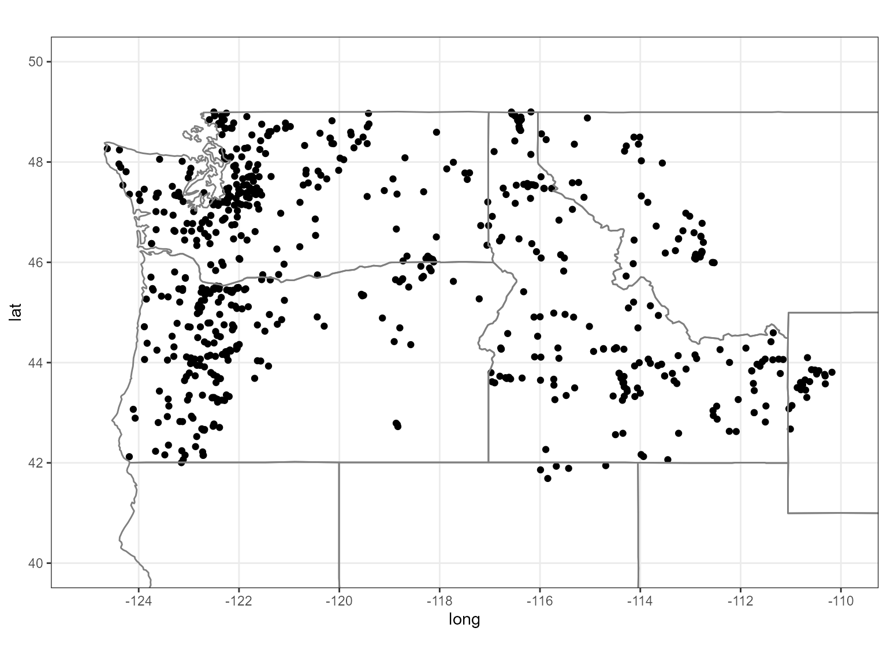
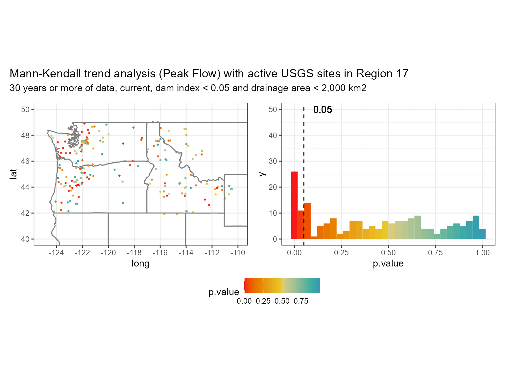
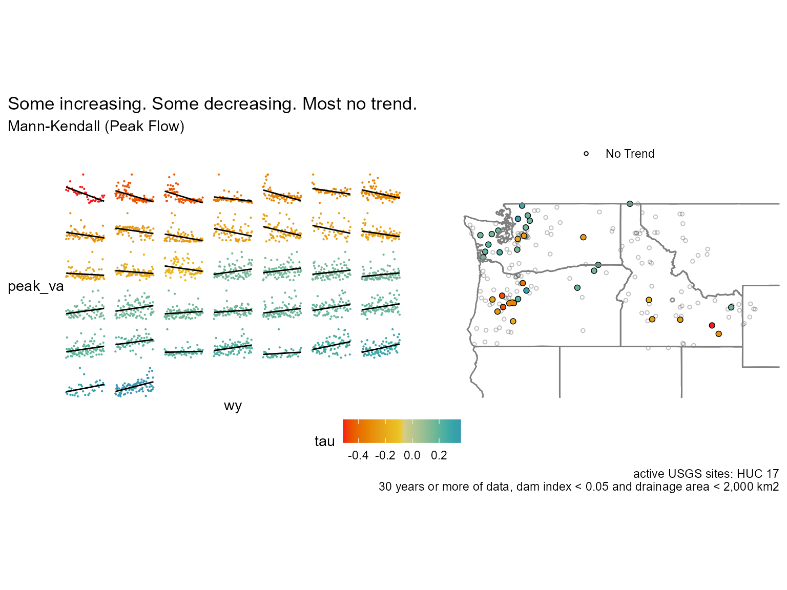
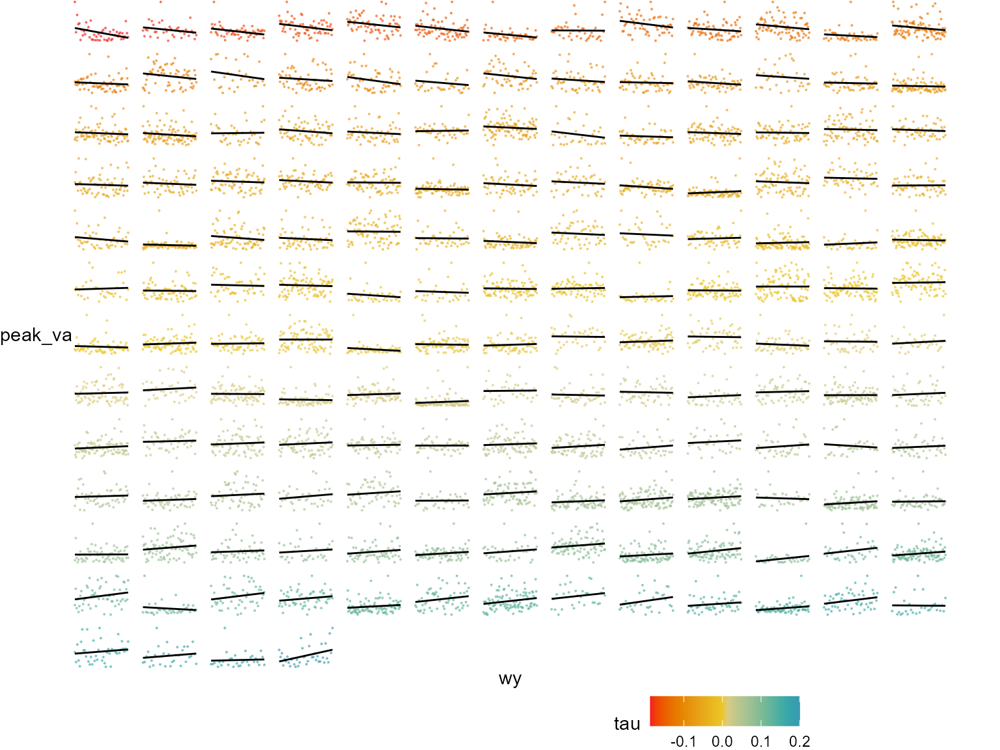
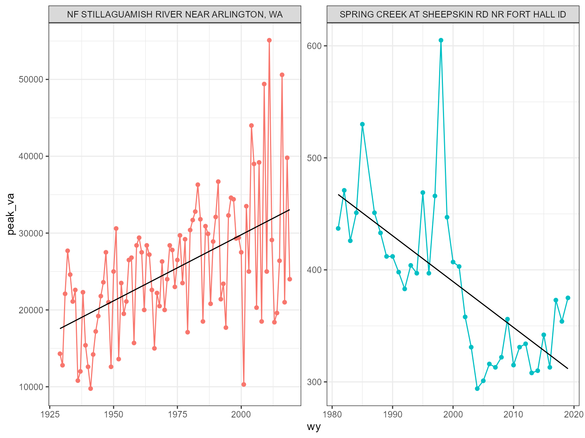
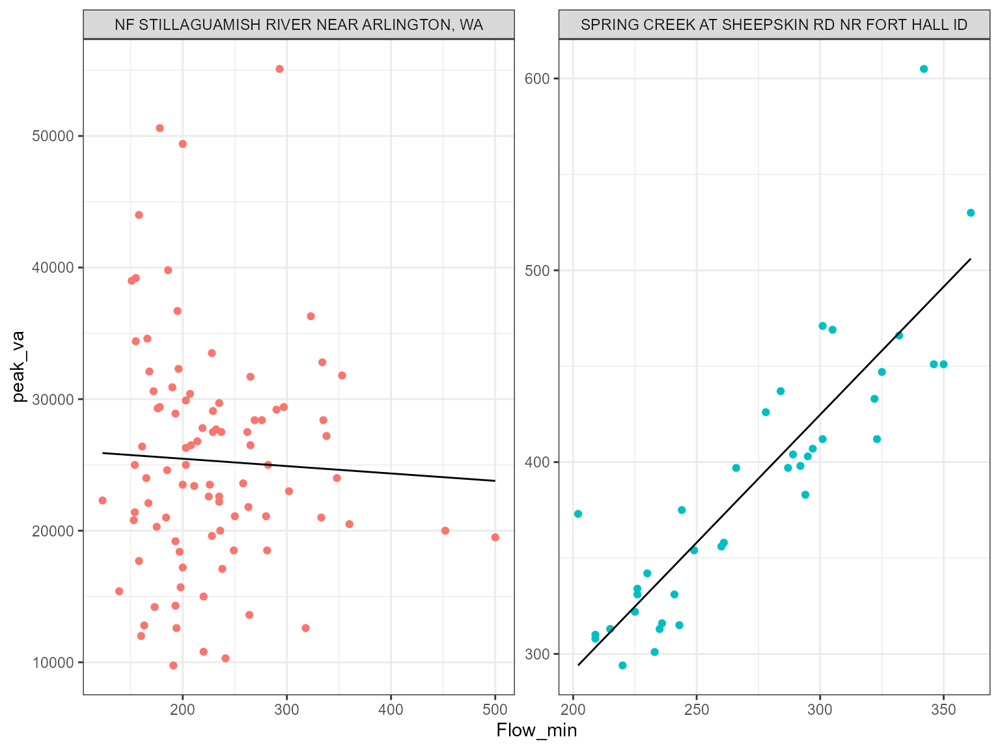
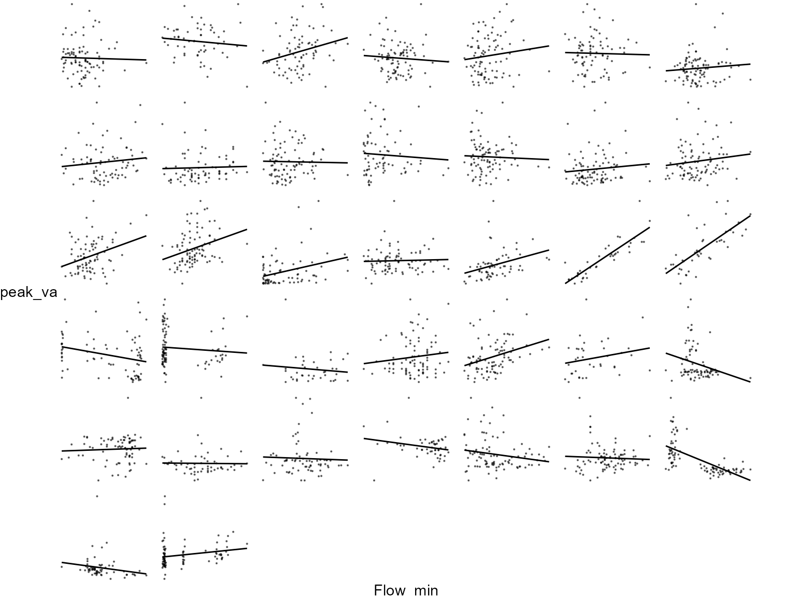

Running repetitive tasks in parallel can save a lot of time (of course) but it can also provide more time to do other things like exploratory data analysis (EDA). This lets the user explore hypotheses and visualizations relatively quickly and as a result see if a more thorough analysis is needed or pick up on some underlying patterns and structures. whitewater provides some wrapper functions around dataRetrieval::readNWISdata() so that the user can then future::plan() their method of parallelization. This vignette will go over a basic example of how one might use whitewater to get an idea of gauging stations that might be showing a trend (positive or negative) over time.
First we’ll need to load a few packages and then we can get started. We’ll use the function dataRetrieval::whatNWISdata() to get active gauging stations with drainage areas less than 2,000 sq.km’s. From there, we can then use the station site id’s to get the actual daily flow values over time.
library(whitewater)
library(sf)
library(future)
library(furrr)
library(purrr)
library(lubridate)
library(httr)
library(jsonlite)
library(dataRetrieval)
library(Kendall)
library(patchwork)
library(broom)
library(dplyr)
library(tidyr)
library(readr)
library(ggplot2)
huc17_sites <- dataRetrieval::whatNWISdata(huc = 17,
siteStatus = 'active',
service = 'dv',
parameterCd = '00060',
drainAreaMax = 2000)
cat("# of sites: ", nrow(huc17_sites))
#> # of sites: 675
st_as_sf(huc17_sites, coords = c('dec_long_va', 'dec_lat_va')) %>%
ggplot() +
geom_sf() +
borders('state', xlim = c(-130, -110), ylim = c(40, 50)) +
coord_sf( xlim = c(-125, -110), ylim = c(40, 50)) +
theme_bw()
Now that we have the sites we’ll get the daily values in parallel. We’ll keep the workers to be 10 or less so we don’t overload the server! Remember, we need to call future::plan() and then parallel = TRUE so that ww_dvUSGS() will run in parallel. Behind the scenes whitewater uses {furrr} to run the operation in parallel. This is essentially chunk-based parallelism; where we are chunking by site id and then mapping dataRetrieval::readNWISdata() with some other added stuff.
#need to call future::plan()
##### Remember, please use 10 or less workers #####
plan(multisession(workers = 10))
#running on 10 cores
pnw_dv <- ww_dvUSGS(huc17_sites$site_no,
parameter_cd = '00060',
wy_month = 10,
parallel = TRUE,
verbose = FALSE)
nrow(pnw_dv)
pnw_dvNow we can use other ww_ functions to filter the data by water year, month, water year and month, as well as stat reporting (percentiles comparing current readings).
Same as above, we can just call parallel = TRUE to run in parallel since we’ll be getting peak flows from dataRetrieval::readNWISpeak(). If you don’t need/want the daily flows summarised, you can just call ww_peakUSGS() and that will only call the dataRetrieval::readNWISpeak() function. For our case, we’ll use the ww_wyUSGS() because we’ll want to look into some other stats (minimum) as well as filter by total water years.
pnw_dv_filt <- pnw_dv %>% filter(obs_per_wy > 360)
pnw_wy <- suppressMessages(ww_wyUSGS(pnw_dv_filt, parallel = TRUE, verbose = F))Now let’s filter the sites with greater than or equal to 30 years of data and also account for dams above them. Dams become a real problem when performing runoff statistics like peak flow since they are regulated, i.e. flows can be altered. Thus we need to account for this discrepancy by either taking out any sites that have dams above them (# of dams > 0) or somehow account for the relative impact (dimensionless value) these dams contribute above point of interest (comid). We’ll use the latter because of the robustness when compared with the other method, i.e. size matters more than counts.
First, we’ll filter the sites that have less than 30 years of data and create a decade column so we can join the dam index data.
pnw_wy <- pnw_wy %>% filter(wy_count >= 30)
#we'll need this later
pnw_wy <- pnw_wy %>% mutate(decade = 10+(10*(lubridate::year(peak_dt) %/% 10)),
decade = ifelse(decade == 2020, 2018, decade))Second, we’ll dive into the dam situation. You’ll need to download a zip file from here from Wieczorek et al. 2021. The name of the zip file we need is DamIndex_PMC.zip. This will download a bunch of csv’s that we’ll bind together so that we can take out any decades with greater than 0.05 DI. The 0.05 threshold was chosen based on the meta data (Wieczorek et al. 2021) where less than 0.05 is described as “Regulation not considered to impact peak flows.” This will allow for watersheds that have dams but are almost negligible when it comes to a peak flow analysis.
dam_ts <- tibble()
for(i in c(seq(1800, 2010, 10), 2018)){
damindex <- read_csv(paste0('DamIndex',i,'.csv'))
damindex$year <- i
dam_ts <- bind_rows(dam_ts, damindex)
}
#get comids for nwis sites
comids <- function(point) {
clat <- point$geometry[[1]][[2]]
clng <- point$geometry[[1]][[1]]
ids <- paste0("https://labs.waterdata.usgs.gov/api/nldi/linked-data/comid/position?coords=POINT%28",
clng,"%20", clat, "%29")
error_ids <- httr::GET(url = ids,
httr::write_disk(path = file.path(tempdir(),
"nld_tmp.json"),overwrite = TRUE))
nld <- jsonlite::fromJSON(file.path(tempdir(),"nld_tmp.json"))
}
comids_nwis <- pnw_wy %>%
sf::st_as_sf(coords = c('long', 'lat'), crs = 4326) %>%
split(.$site_no) %>%
furrr::future_map(~comids(.)$features$properties$identifier)
comids_nwis <- tibble(COMID = as.numeric(comids_nwis),
site_no = as.numeric(names(comids_nwis)))
# now join comids with pnw_wy and then join with dam_ts
pnw_wy <- pnw_wy %>%
mutate(site_no = as.numeric(site_no)) %>%
left_join(comids_nwis, by = 'site_no') %>%
left_join(dam_ts, by = c('decade' = 'year', 'COMID')) %>%
filter(DamIndex < 0.05)One final step! Since we are taking out years with a dam index >= 0.05, we’ll need to make sure that we have current years available (2018, 2019, 2020, etc). What’s nice about using Mann-Kendall trend analysis is that it’s not too sensitive to missing years; however, years spanning several years or large gaps in the data will not truly represent the test you are looking for. Therefore, we’ll need to take out large gaps as well.
pnw_wy_current <- pnw_wy %>%
group_by(site_no) %>%
summarise(n = n(),
max_wy = max(wy)) %>%
filter(max_wy >=2018) %>%
pull(site_no)
pnw_wy <- pnw_wy %>% filter(site_no %in% pnw_wy_current)
pnw_wy <- pnw_wy %>%
group_by(site_no) %>%
mutate(diff = wy - lag(wy),
diff = if_else(is.na(diff), as.numeric(1), diff),
logical = diff > 3,
last_logical = last(which(logical)),
last_logical = if_else(is.na(last_logical), first(which(!logical)), last_logical),
last_row = dplyr::last(which(!logical))) %>%
slice(last_logical:last_row) %>%
add_count() %>%
filter( n > 30) %>%
ungroup
cat("# of sites after filtering: ", length(unique(pnw_wy$site_no)))
#> # of sites after filtering: 197 In the graph above we can see that the data is skewed left with a decent amount of values equal to or below 0.05! But are they increasing or decreasing? For that we can use the statistic from the Mann-Kendall function to see if the trend is increasing (> 0) or decreasing (< 0). 
Here’s what the no trend data looks like below.

Let’s take a look at a few of the sites, i.e. one high positive, one low negative.

Now we can compare the minimum for that same water year with the peak and see if there is any dependence/correlation?

It looks like the gauges with a increasing trend seem to have a correlation. Let’s check the other’s.

Some of these bivariate plots have some structure associated with peak flows and flow minimums but most are random! Peak flows are not always associated with lots of water for the year!
Hopefully this gives you an idea of how to use whitewater with parallel? If you have any questions or issues please submit a issue on github. Thanks!
Wieczorek, M.E., Wolock, D.M., and McCarthy, P.M., 2021, Dam impact/disturbance metrics for the conterminous United States, 1800 to 2018: U.S. Geological Survey data release, https://doi.org/10.5066/P92S9ZX6.